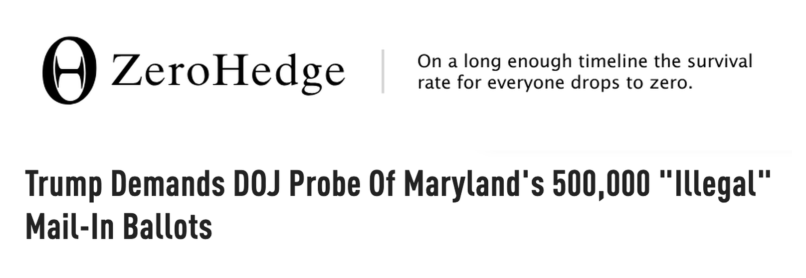
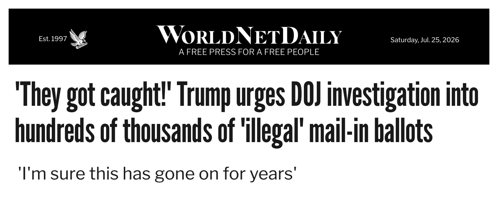
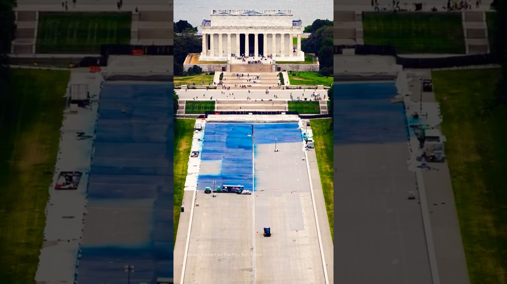

How stories about government get rewritten in your feed, and the AI we built to check them against the record.
Swapneel Mehta · Founder, SimPPL · NYC Civics Pilot · Part 2: Social Media, Technology, and AI
2014 · AP · AUTOMATED EARNINGS STORIES
The AP wrote about 300 quarterly earnings stories by hand. Automation took the count to 3,000 a quarter within a year, then 3,700 by mid-2015.
2016 · WASHINGTON POST · HELIOGRAF
Heliograf wrote about 850 stories in its first year: around 300 Rio Olympics briefs, and 500 election stories that drew over 500,000 clicks.
2023 · LSE JOURNALISMAI SURVEY
Across 105 news organisations in 46 countries, around 85% of respondents had at least experimented with generative AI.
2024 · CITYMEETINGS.NYC
Vikram Oberoi built citymeetings.nyc: it transcribes every NYC Council meeting, and LLMs cut each one into chapters and summaries he reviews before publishing.
Lou Ferrara, AP managing editor, 2014: "I can't have journalists spending a ton of time data processing stuff. Instead I need them reporting."
OSINT means reporting from open sources: public posts, satellite photos, flight logs. Data journalism means reporting from datasets too large to read page by page.
2016 · BELLINGCAT · MH17
Bellingcat traced the Buk launcher that downed MH17 to a Russian brigade, from soldiers' social posts and satellite imagery. The official investigation reached the same conclusion in 2018.
2019 · NYT VISUAL INVESTIGATIONS
The Times proved Russian jets bombed four Syrian hospitals in 12 hours, from intercepted cockpit radio, plane-spotter logs, and video by local journalists.
2021 · ICIJ · PANDORA PAPERS
11.9 million leaked records, 2.94 terabytes. Machine learning separated the forms; ICIJ's Datashare opened them to 600+ journalists in 150 outlets.
Arbiter applies the same method to public social media: the posts are the open source.
This is the workflow we will walk through today, on two live case files.
What is moving, on which platforms, pushed by which accounts.
Separate what is asserted from the noise around it.
Official statements, coverage, and fact-checks, attached to each claim.
Who coordinates, what changed, and every answer cites its posts.
The tool behind the walkthrough is Arbiter: it reads public conversation across X, YouTube, Facebook, Bluesky, Reddit, Telegram, and Instagram.
"Where there's smoke, there's fire" served us well. It is now a target: produce enough smoke and people supply the fire themselves.
No ideology owns this trick; it is centuries old. It works even on real fires: decoy smoke points you at a different one.
Outrageous, controversial, sticky. A claim needs no basis to travel; outrage is fuel enough.
On Twitter, true stories took about six times as long as false ones to reach 1,500 people.
Falsehoods were 70% more likely to be retweeted than the truth. 126,000 retweet chains, 4.5M tweets.
Facts are how you judge claims. Investigations produce the facts. But investigations take time, and the smoke does not wait.
We build AI that speeds investigations up. You dispel the smoke, and see whether a fire exists, and where.
We fight public deception campaigns that work to bend public opinion on:
A vendor coding error sends some voters the wrong party's primary ballot. The vendor cannot tell who was affected.
The state announces the error, then mails replacement ballots to everyone served before May 14. Over 500,000 requests.
Originals are voided. Each return envelope has a unique identifier: one ballot counted per voter.
The state's election administrator, on the record: "no fake OR illegal mail-in ballots were distributed."
HOW IT WAS ANNOUNCED · REAL POSTS FROM THE STUDY
"The Maryland State Board of Elections has officially begun mailing out primary ballots for the June 23rd election. If you have already requested a mail-in ballot, you should expect it to arrive in your mailbox within the next 4 days."
675 interactions
"Maryland State Board of Elections announces mail-in ballot error affecting voters who received ballots before May 14, 2026."
122 interactions
Post text verbatim from the study; a transparent correction, announced before replacements went out.
"🚨 HOLY CRAP! President Trump just revealed over 500,000 ILLEGAL MAIL-IN BALLOTS were sent out by Maryland..."
428,941 interactions
"🚨 HOLY CRAP!! ...DOUBLE the amount of mail-in ballots are now circulating the state of Maryland... 500,000 turned into 1 MILLION"
495,014 interactions
The coordination run found one templated line repeated by 50+ distinct accounts, minutes to hours apart. Nearly all are commentary or activist accounts.
AND PACKAGED AS NEWS · SITES SHARED IN THE STUDY


Also in the study: Newsmax, Fox News, The Gateway Pundit, Townhall.
Arbiter clusters the 620 posts into concepts and sub-concepts, with the real posts beneath them.click any row
The Twitter tab clusters 620 posts from 436 users; the full study spans 1,485 posts on four platforms. The rest opens in the live study.
It passed the House 218–213; a Senate amendment version fell 48–50 in June. The false-ballot claims circulated exactly while the Senate weighed it.
Real footage, real reopenings, and a very particular story about who to thank.

The single dominant post in the study: 217.6K interactions. Arbiter's clickbait score for it: a clean 0 of 5, where 5 is heavy engagement bait.
There is a real fire here. It is just not the one the fountain videos point at.
Baseline: 2 to 20 posts a day. After the Cabinet meeting, official accounts seed the story; May 31 alone draws 3.86M interactions, led by a 2.22M-interaction "AWESTRUCK" clip.
The loudest amplifier here, EricLDaugh, also topped the Maryland study. Officials seeded the story, influencer accounts templated it, and the feed filled with fountains.
CHECK 01 · FIND THE ORIGINAL ANNOUNCEMENT
Maryland announced the vendor error on May 15. The "500,000 illegal ballots" wave started May 16, a day behind the public record.
CHECK 02 · REPETITION IS NOT VERIFICATION
One templated line, repeated by 50+ distinct accounts minutes to hours apart. The accounts repeating it did not each verify it.
CHECK 03 · ASK WHAT SET OFF THE SPIKE
Fountain posts ran 2 to 20 a day until a Cabinet meeting spent about ten minutes on them. Officials seeded the story; influencer accounts templated it.
CHECK 04 · ASK AI FOR ITS SOURCES
Every Arbiter answer cites the posts it read. An AI answer without sources you can open is an unverified lead.
Both case files are public studies on arbiter.simppl.org. We will browse one, ask the agent a question, and check a claim together.
Free for journalists and fact-checkers, subsidized by our grants. Investigation reports land in your inbox via simppl.org/newsletter. Write to team@simppl.org.
Rarely is all the evidence available on day one. What read as true yesterday may not hold today.
A few facts, many gaps. Early accounts fill the gaps with guesses.
Documents surface. Officials answer. Fact-checks land. The account shifts.
Yesterday's version gets revised. That is evidence doing its job.
Post-truth, as I use the word: the version of the truth available today is not the same as yesterday's.
When the smoke was real, both industries manufactured other smoke and pointed at a different fire.
1954 · "A FRANK STATEMENT TO CIGARETTE SMOKERS"
A full-page industry ad in 448 newspapers, reaching some 43 million readers, promising research into "all phases of tobacco use and health."
1969 · BROWN & WILLIAMSON INTERNAL MEMO
"Doubt is our product since it is the best means of competing with the 'body of fact' that exists in the mind of the general public."
1967 · "PROJECT 226"
The Sugar Research Foundation paid three Harvard scientists $6,500 for a New England Journal of Medicine review that blamed heart disease on fat and cleared sugar. Undisclosed until 2016.
2015 · GLOBAL ENERGY BALANCE NETWORK
Coca-Cola put $1.5 million behind a nonprofit blaming obesity on inactivity instead of diet. Exposed, it closed within months.